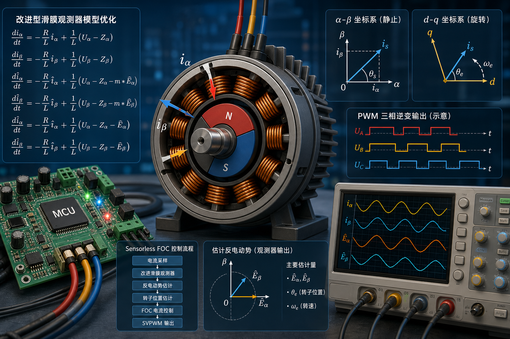

50 us 快环时间预算示意
这些分段是教学预算，不是实测值。真实耗时要用 GPIO、GPT 计数或 DWT cycle counter 在板子上测。
这不是通用课件，而是把当前工程里的启动状态机、坐标变换、滑模观测器、角度估算和调参路径拆开讲清楚。页面内的流程、函数名、参数值和调试口都直接来自这份代码。
PWM_FREQUENCY 与 PWM_PERIOD_T。
DEAD_TIME = 240，对应 GPT 120 MHz 计数时钟。
OBSERVER_S_MAX_VALUE = 170，OBSERVER_K_SLIDE = 30000。

这张图放在首页作为全局地图。后面的坐标变换、滑模观测器、启动切环和调参，都是围绕这张图里的信号流展开：上面是控制输出链，右侧是功率驱动链，下面是电流与角度反馈链。
不要从左到右硬读，FOC 是闭环系统。先分清功率链、采样链、角度链和控制链。
SVPWM -> driver -> 三相逆变 -> PMSM，这是最终把控制量变成三相电压的路径。
Ia/Ib/Ic -> Clarke -> Iα/Iβ -> Park -> Id/Iq，这是电流环能闭上的基础。
Iα/Iβ + Uα/Uβ -> 滑模观测器 -> θr/ω，估出的角度决定 d/q 轴摆在哪里。
速度 PI -> Iq_ref，Id_ref=0，两个电流 PI 输出 Ud/Uq，再反 Park 或矢量合成送入 SVPWM。
当前工程不是在 while(1) 里跑控制，而是在 ADC0 扫描完成中断里每 50 us 执行一次完整快环。点击下面任一步，右侧会显示该步的输入、输出、关键变量和代码位置。
这些分段是教学预算，不是实测值。真实耗时要用 GPIO、GPT 计数或 DWT cycle counter 在板子上测。
重点看电流链路和角度链路在哪里汇合：最终在 Park/反 Park 和 SVPWM 处闭合。
快环总周期由 PWM_FREQUENCY = 20000 决定，所以一拍只有 50 us。网页里的分段时间只是预算示意，真正能用于判断风险的是实测值：测 ADC 中断总耗时，再逐段测 m_phase_current_calculate()、m_observer_execute()、m_foc_algorithm_execute() 和 m_svpwm_generate()。
time_us = delta_count / 120。
time_us = cycles / 120。
一个测量引脚只包住一个函数；多个函数建议换不同 GPIO，或者分多次烧录测量，避免测量代码本身干扰过大。
最终要看“最坏情况总耗时”。如果总耗时接近 50 us，需要降低计算量、减少快环内调试输出，或把非必要任务移到慢环。
src/drv/drv_adc_cb.c: adc0_1_irq_callback()
m_phase_current_calculate()
m_clark_transform()
m_park_transform()
m_observer_execute()
m_sensorless_rotor_angle_calculate()
m_foc_algorithm_execute()
m_svpwm_generate()
注意不要在快环里加串口打印。串口会严重改变中断耗时；需要输出数值时，把结果存到 RAM 缓冲区，再在慢环或停机后读取。
这个实验区把 abc -> alpha/beta -> d/q 过程做成了可视化。你只需要调整电流矢量角度和转子角度，就能看到为什么 Id 表示磁链分量、Iq 表示转矩分量。
ia + ib + ic = 0，所以三个量里实际只有两个自由度。
Id 是沿转子磁链方向的电流，Iq 是垂直磁链方向的电流，主要决定转矩。
A/B/C 三相轴互差 120°。在平衡三相里，第三相可以由另外两相推出，因此可以等价成 αβ 平面上的一个电流箭头。
同一个 iα/iβ，转子角度不同，投到 d/q 轴上的结果就不同。FOC 控制的是这个投影结果，而不是直接控制三相电流波形。
ia, ib, ic: 三相绕组电流
约束: ia + ib + ic = 0
iα = ia
iβ = (ia + 2 * ib) / sqrt(3)
Id = iα * cosθ + iβ * sinθ
Iq = -iα * sinθ + iβ * cosθ
三相电流是交流量，直接用 PID 控制会遇到一个问题：目标值和实际值都在随转子位置变化。Park 变换后，如果角度正确，稳定转矩对应的 Id/Iq 会接近直流量，这样电流环就能像控制普通直流量一样工作。
所以无感 FOC 的角度估算很关键：角度错了，Park 投影就错，Id 和 Iq 会互相串扰，表现为电流大、转矩小、噪声大或启动失败。
柱状图强制显示 Ia + Ib + Ic = 0，拖动上方滑块可以直接观察三相电流如何变化。
Id 越接近 0，电流越集中在转矩轴；Iq 的正负决定转矩方向。
m_phase_current_calculate() -> m_clark_transform() -> m_park_transform(rotor_engle)
src/motor/m_coordinate.c:55 / 109 / 159
Id target = 0; Iq target 由启动 Iq 或速度环输出决定
当前工程实现的是带边界层的离散滑模观测器。左侧参数会驱动右侧的饱和特性曲线，并给出对抖振、收敛和角度噪声的定性判断。判断逻辑基于这份工程的参数范围，不是抽象教材默认值。
Uα/Uβ、实测的 Iα/Iβ 和电机 R/L 模型，反推出反电势 Eα/Eβ，再由反电势得到 θe。
i_hat，再看预测电流和真实电流的误差 s=i_hat-i。误差大就强力修正，误差小就线性修正，修正量 z 经过低通后近似反电势。
K/Smax 不合适会抖振，所以工程里用了边界层和两级低通。
连续模型中的未知量是反电势 E。SMO 通过让估计电流贴近真实电流，把未知反电势转换成可观测的滑模修正量 z。
看懂这张图就能知道每个变量从哪里来、在哪个函数里计算、最后送到哪里使用。
优点: 简单，适合方波/BLDC
缺点: 低速弱，FOC 正弦控制下角度连续性不够
优点: 模型清晰，输出平滑
缺点: 更依赖 R/L/Ke 参数，增益设计复杂
优点: 可自适应估计速度/参数
缺点: 推导和稳定性设计更重，调参链路长
优点: 抗噪声强，可融合多状态
缺点: 计算量大，矩阵和噪声协方差调试成本高
优点: 零速/低速也能估角
缺点: 需要电机凸极性，噪声和实现复杂度更高
这份工程的目标是 20 kHz 快环内完成无感 FOC，平台适合定点运算。SMO 不需要矩阵运算，只依赖加减乘、饱和函数和低通滤波，计算量可控；同时它直接利用电流误差闭环修正，比单纯开环积分模型更能抗参数误差和采样噪声。
注意：低速时反电势本身很小，任何反电势类观测器都会困难。工程通过预定位、开环强拖、切闭环判断解决零速启动问题，而不是一上电就靠 SMO 闭环。
Iα/Iβ
来源: Clarke 变换后的真实电流，来自 m_foc_unit.coordinate.q15_i_alpha/beta
用途: 作为观测器校正参考，和 i_hat 比较得到误差 s
Uα/Uβ
来源: 上一拍 SVPWM/电压矢量分解得到的 q15_u_last_alpha/beta
用途: 作为电机模型输入，参与下一拍估计电流计算
F / G
来源: F=1-Ts*R/L，G=Ts/L，在 m_parameter.h 转成 Q15
用途: 把连续电机方程离散化，决定估计电流的模型动态
i_hat
来源: m_observer_estimate_current() 用 F/G/U/Z/E 递推得到
用途: 和真实电流做差，产生滑模面 s=i_hat-i
Smax
来源: OBSERVER_S_MAX_VALUE=170，边界层宽度
用途: 决定误差多大进入饱和区；越小越硬，越大越平滑
K
来源: OBSERVER_K_SLIDE=30000，滑模增益
用途: 决定 z 最大修正能力；过小跟不上，过大易抖振
zα/zβ
来源: z=K*sat(s/Smax)，由 m_observer_z_calculate() 计算
用途: 一边反馈修正估计电流，一边经过低通提取反电势
Kafc
来源: 根据估计速度/角度增量自适应计算，写入 m_obs_unit.q15_kafc
用途: 作为两级低通系数，速度越高通常允许更高带宽
Eα/Eβ
来源: zα/zβ 经过两级 math_q15_digital_lpf()
用途: 作为反电势矢量，用于 atan2(Eβ,Eα) 求角度
θe
来源: m_sensorless_theta_e_calculate() 中 atan2(Eβ,Eα) 后再做 90°补偿
用途: 确定 d/q 坐标轴位置，送给 Park/FOC/SVPWM 相关角度链路
i_hat[n] = F*i_hat[n-1] + G*u[n-1] - G*z[n-1] - G*e_hat[n-1]
src/motor/m_observer.c:80, 102, 144
theta_e = atan2(e_beta_final, e_alpha_final)，位于 src/motor/m_rotor_angle.c:127
观测器不是直接“算角度”，而是先让估计电流贴近真实电流，再把滑模输出滤成反电势，最后由反电势矢量求电角度。
当前项目没有从零速直接无感闭环，而是先做预充电、两步预定位、开环强拖，再通过观测角和强拖角的相位关系判断是否切环。左侧点步骤，右侧看目的、参数和调试重点。
低速无感反电势弱，所以程序先用固定角度和开环强拖制造可观测反电势，再判断是否进入闭环。
这部分按阅读顺序组织文件，不按目录顺序罗列。左侧选文件，右侧看它在整条链路中的职责、必须先读懂的函数，以及和其他模块的前后依赖。
先调通观测器，再谈速度环。这里把台架、观察量、推荐顺序和故障症状分开列，避免把电流零偏、模型误差、滑模参数和速度环问题混在一起。
横轴是 Smax，纵轴是 K。颜色越偏红，越容易抖振；越偏灰，越容易收敛慢；中间区域更适合作为台架起点。
题目都围绕当前项目的真实实现，不考抽象定义。答错时会指出应该回去看哪一段流程或哪一个文件。